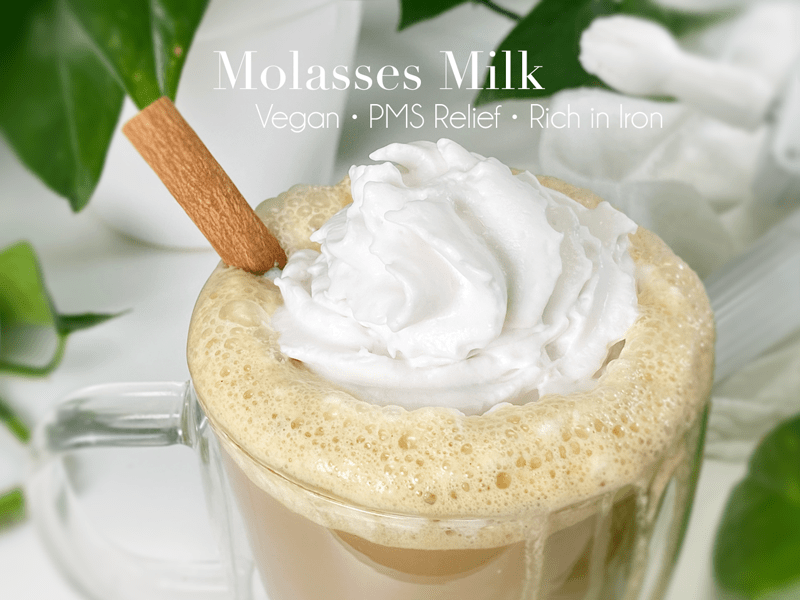
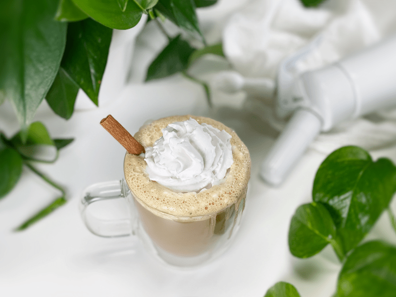
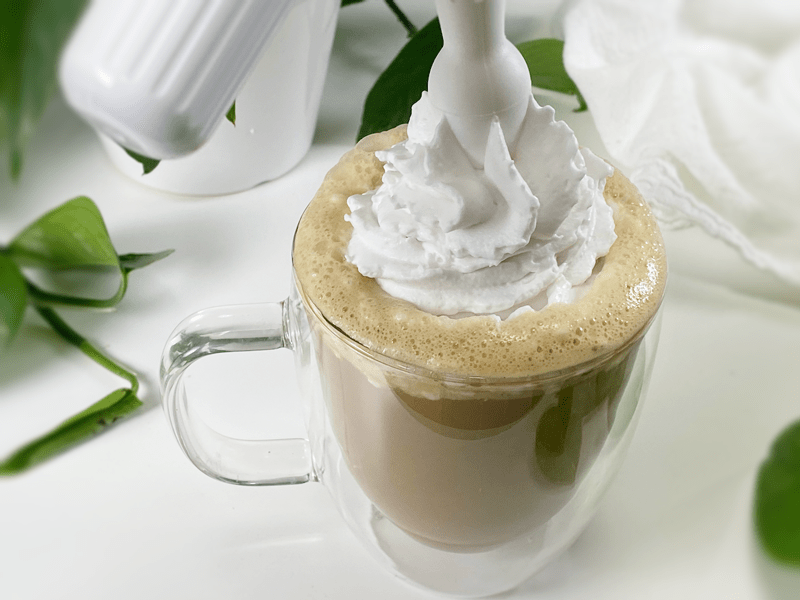
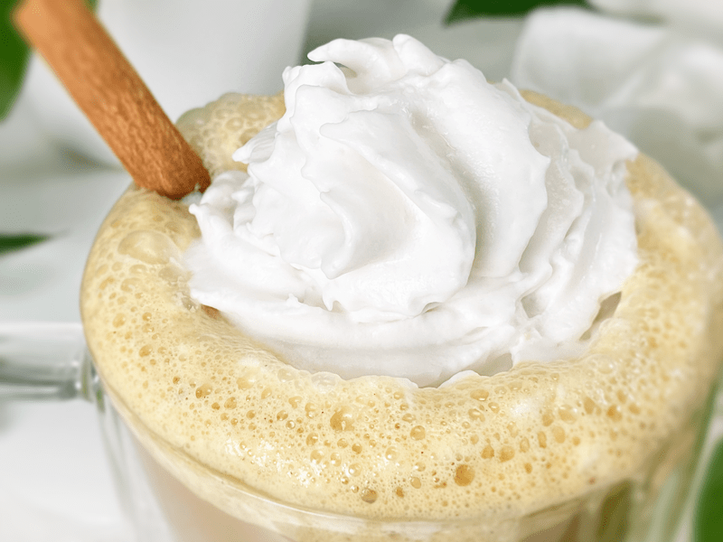
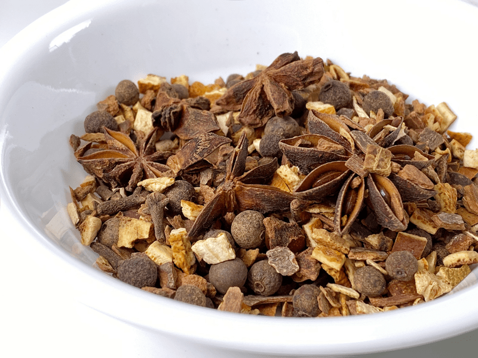

Molasses Milk | Attention Ladies (but not limited to)
You may be new to the idea of Molasses Milk or perhaps you may have grown up on it… either way, my hope is that you enjoy this rich, caramelly, drink (with a hint of rum!) as much as I do. My taste buds even detected a hint of black licorice, but that might be wishful thinking since I love that flavor. The beauty of this drink is that it can be enjoyed warm, making it perfect for a cold winter’s day, or you can pour it over ice for a cool and refreshing drink during the summer.

Today, I am going to briefly talk about our menstrual cycles. Yikes, Amie Sue! I know, but I have never been shy when it comes to talking about digestive issues and bowel movements, since they are greatly affected by nutrition. And believe it or not, so are our menstrual cycles. It’s a natural part of life that really should be recognized, taught about, and celebrated. Unfortunately, it has taken me decades to understand this.
Since dialing in my nutrition and working on my emotional and spiritual health, along with bodily movement, my cycles have become more of a regular, beautiful experience of womanhood. (my personal positive affirmation, and I am sticking to it!) Our cycle acts as a stress-sensitive system that constantly gives us feedback regarding our health and overall well-being. We just have to learn to stop and listen! I am a work in progress, and each cycle brings me a bit closer to understanding myself.
So, what does all of this have to do with Molasses Milk? I promise we will get there. When it comes to caring for my body (inside and out) I find that it takes a large toolbox to hold all my self-care tools. Tools come in the form of exercise, meditation, praying, art, eating healthy, avoiding triggering foods, and so forth. We all have a “toolbox,” and it is outfitted with unique tools that are customized to our individual needs. If we were to rummage through each other toolboxes, we would discover one common tool: food (nutrients). Maybe you eat a nutrient-dense diet, a SAD diet, or perhaps somewhere in between. I am all about nutrients, so I am continually researching what foods provide the best support.

One day, during my research, I stumbled upon some of the health benefits of molasses, and tucked deep within the paper, PMS RELIEF jumped out at me with blaring lights. You see, it’s taken me quite a few years to regulate my cycle, but every month I am presented with a variety of undesirable PMS symptoms. After doing my due diligence about blackstrap molasses, I added it to my toolbox. I read about adding one tablespoon of molasses to your daily diet for a variety of ailments, and PMS is one of them.
So, I did a test-run of adding Molasses Milk to my monthly cycle regime, and much to my delight, I experienced a decline in symptoms: no headaches, no cramps, and a shorter cycle. My routine is to start drinking it 3 days before and continuing 3 days after my cycle begins. And for any men reading through this… if you are married and/or have daughters, perhaps you can share this with her.
To be honest, I had to ask myself if it was all a placebo effect. Maybe, but it really doesn’t matter, because if it was, that just goes to show how powerful the brain is. All I can say is that this is now a tool I pull out for my monthly cycles.

If you are a man or you’re at an age where you aren’t bothered by monthly cycles, there are plenty of other health benefits that molasses has to offer. I will share a few below but please, I encourage you to do your own research and if you have any health issues, be sure to talk this over with your healthcare practitioner.
Health Benefits
- Alleviates Menstrual Problems: Blackstrap molasses contains certain minerals, such as magnesium and calcium, that can help relieve menstrual cramps. Essential minerals found in blackstrap molasses, such as magnesium, manganese, and calcium, prevent the clotting of blood, which relieves menstrual cramps and maintains the health of uterine muscles.
- Constipation and Other Digestive Problems: Blackstrap molasses is a natural laxative that can help soften the stool. It can help to relieve constipation and make the bowels more regular. This is due to the high magnesium content in the molasses, which helps to relax muscles and bring water into the stool, making it naturally easier to pass.
- Prevents Anemia: It is a great source of iron and therefore can be essential to someone who has iron-deficiency anemia. Since it is a good source of iron, it helps the body to create more red blood cells, which carry oxygen from the lungs to the rest of the body.
- Combats Stress: Vitamin B is commonly recommended by health experts to improve your mood and ease the effects of stress. This vitamin is found in blackstrap molasses and can help the brain and nervous system to function properly. It can also help you to feel relaxed and fight stress and fatigue.

Why Use Blackstrap Molasses?
Blackstrap molasses is the syrup produced after the third boiling. Normally, I wouldn’t be a fan of any food/ingredient that goes through that much processing, but I am a fan of nutrients, and this version of molasses is supposed to have the most health benefits since it is so concentrated.
Should I Use Sulfured or Unsulfured?
In this recipe, I am using unsulfured. Sulfur dioxide is sometimes added to molasses as a preservative because molasses can ferment. The addition of sulfur dioxide does change the taste of the molasses, but many people have adverse reactions to sulfur. I will provide a link below to the one that I am currently using.

Additional Ways to Enjoy Blackstrap Molasses
If you like the nutritional benefits of molasses, here a few other ways to add it to your diet. Keep in mind that blackstrap molasses is less sweet than normal molasses, so if you have a real sweet tooth, you might need to add a little sweetener alongside it.
- Use it as a spread on toast.
- Stir a spoonful into your oatmeal or porridges.
- Add a spoonful to your morning cup of coffee or smoothie.

Mulling Spices (optional)
The addition of mulling spices to the heated version of this milk creates something pretty remarkable. You can purchase prepackaged mulling spices, or you can make your own. I will include a recipe down below that will make more than what is needed for a single serving. It can be stored in an air-tight container and used for your evening cup of molasses milk. Plus, each spice has its own nutrients!
- Allspice — Carminative properties, which means it can relieve gas, bloating, and stomach upset.
- Black Peppercorns — High in antioxidants, has anti-inflammatory properties, piperine found within the peppercorns may help improve blood sugar metabolism.
- Cardamom — Rich in compounds that may fight inflammation.
- Cinnamon — Loaded with antioxidants, anti-inflammatory properties, helps reduce blood pressure and cholesterol, helps balance blood sugar levels.
- Cloves — High in antioxidants, antimicrobial properties, helps stabilize blood sugar levels.
- Orange — Source of Vitamin C and antioxidants.
- Star Anise — Used to treat respiratory infections, nausea, constipation, and other digestive issues.
If you give this recipe a try, please leave a comment below. blessings and bottoms up! amie sue
 Ingredients
Ingredients
Mulling Spice Mix
- 3 oz cinnamon sticks
- 1/3 cup cardamom pods
- 1/4 cup allspice berries
- 1/4 cup whole cloves
- 1/4 cup star anise pods
- 1/3 cup dried orange peel
- 1/4 cup black peppercorns
Preparation
Warm Mug of Molasses Milk
- In a small saucepan, heat the milk, molasses, cinnamon, and vanilla over medium heat until warmed but not boiling.
- If you choose to add the mulling spices, add 1 tsp – 1 Tbsp of the spice mix to the pan. It all depends on strong you like the flavors.
- I use oat milk for my drinks.
- If you wish to add any other sweetener, do so now. If using stevia, add before serving.
- Remove from heat, cover, and allow to steep for 5 minutes.
- Strain through a fine-mesh strainer, catching all the mulling spices.
- Enjoy while it’s nice and warm.
Cold Glass of Molasses Milk
- In a blender combine the milk, molasses, cinnamon, stevia if you want it a little sweeter, and vanilla. Blend until frothy. Pour over ice and enjoy.
- If you wish to enjoy the mulling spices in your cold drink, make a double or triple batch of milk as listed above, and let it cool before storing in the fridge so it can get nice and chilled.
Mulling Spice Mix
- Place the cinnamon sticks, cardamom pods, allspice berries, cloves, and star anise in a large zip-lock bag.
- Using a rolling pin, roll over the spices a few times to break larger spices down (this also helps release the oils).
- Add dried orange peel and peppercorns to the bag and toss to mix.
- Store in an airtight container, away from light, until ready to use.
© AmieSue.com